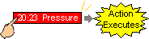
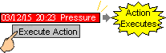

|
|
|
|
|
|
|
|
Draw an Alarm Summary on the panel, and double-click it to display the Alarm Summary Settings dialog box.
In the Basic tab, select the Enable Touch Action checkbox, so any touch actions set up in the variable alarms can run.
Specify how alarm messages are selected.
|
Options |
Description |
|
|
Enables you to select alarm messages by simply touching the message in the alarm summary display. When doing so, a cursor highlights the message to indicate selection. |
You can select both Direct Selection and Auto Cursor. |
|
|
Automatically moves the cursor to the newest alarm. |
||

If you use a switch or script to display the cursor, there is no need to select the DirectSelection or Auto Cursor check boxes. For more information, see Sections 16.2.7, Creating Alarm or Event Operation, and 18.3.8.2, Alarm and Event Summary Methods.
Specify when to run touch actions.
Touch actions run depending on how alarm messages are selected.
|
Alarm Summary Setup |
Alarm Summary Operation |
|
Cursor On Action = TouchAction Enable Action = Enabled Auto Cursor = Disabled Direct Selection = Enabled |
The touch action runs as soon as the alarm message is highlighted.  |
|
Cursor On Action = None Enable Action = Enabled Direct Selection = Enabled Auto Cursor = Disabled |
Touch to select the alarm message and to display an arrow at the end of the alarm message.
Run the touch action by touching the switch. Alternatively, you can run the touch action by running the showSubDisplay method from a script, or by using a switch (Run Touch Action). |
|
Cursor On Action = TouchAction Enable Action = Enabled Auto Cursor = Enabled Direct Selection = Disabled |
The touch action runs when the alarm message is selected. Because the Auto Cursor checkbox is selected, the touch action runs when the new alarm message is first displayed in the alarm summary. |
|
Cursor on Action = None Enable Action = Enabled Auto Cursor = Disabled Direct Selection = Disabled |
You can use a switch (Cursor ON) or the CursorOn method from a script to display the cursor and select the message.  Run the touch action by using a switch (Run Touch Action) or the showSubDisplay method from a script to run the touch action. |
Specify other alarm summary options as required, and click OK.
For alarm summary details, see Section 16.2.6, Setting Up an Alarm and Event Summary.